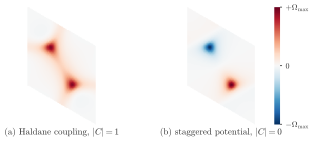
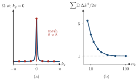

Advanced Quantum Materials 2027 · All lectures · Lecture notes
Session 3. Topological Band Structure Theory
3.5 The Berry curvature, and why the Hall conductivity is an integer
We take the derivative of the Schrödinger equation \(H(k)|u_n(k)\rangle = \varepsilon_n(k)|u_n(k)\rangle\) with respect to \(k_\mu\) and project it onto a different band \(\langle u_m(k)|\), with \(m \neq n\), which gives
\[\langle u_m|\partial_{k_\mu} H|u_n\rangle = \big(\varepsilon_n(k) - \varepsilon_m(k)\big)\,\langle u_m|\partial_{k_\mu} u_n\rangle. \tag{3.3}\]
This identity is the piece that we need, since it replaces a matrix element of \(\partial_k H\) by a matrix element of the \(k\)-derivative of the wavefunction, divided by the energy difference. When we use (3.3) to rewrite the numerator and the denominator of (3.2) together, the explicit dependence on the energies cancels completely. What remains is an object built only from overlaps of wavefunctions, which is called the Berry curvature of band \(n\),
\[\Omega_n(k) = -2\,\mathrm{Im}\, \langle \partial_{k_x} u_n(k)|\partial_{k_y} u_n(k)\rangle,\]
so that the Hall conductivity of a set of filled bands is
\[\sigma_{xy} = \frac{e^2}{h}\, C, \qquad C = \sum_{n\ \text{filled}} \frac{1}{2\pi}\int_{\text{BZ}} \Omega_n(k)\, d^2k. \tag{3.4}\]
This is the central result of the session, and there are two important points about (3.4). First, \(\sigma_{xy}\) depends only on how the wavefunctions change across the Brillouin zone, and not on the energies. We can deform the band structure in any way, and as long as the wavefunctions do not change, the Hall conductivity stays the same. Second, and more surprising, for a gapped system, which is an insulator, \(C\) is always an integer, regardless of the number of bands and of the shape of the dispersion. This is a topological statement. The Brillouin zone of a two-dimensional system is a compact manifold, which is a torus since opposite edges of the zone are identified, and the integral of a curvature over a closed surface always gives an integer. The same happens for the Gaussian curvature of an ordinary closed surface in differential geometry. This integer \(C\) is the Chern number, and (3.4) is the first place in the course where a measurable quantity, the Hall conductivity, is fixed by a topological invariant. As an example, Schematic 3.3 shows the Berry curvature of two gapped honeycomb lattices, which we build in Section 3.10.

We deform the dispersion of a gapped Chern insulator, so that all the band energies change. The Bloch wavefunctions stay the same and the gap stays open. What happens to \(\sigma_{xy}\) in (3.4)?
Show the answers
- A. ✗ False
This is false. Take two samples with \(C=1\) and Landau level gaps of 10 meV and 20 meV. Both give \(\sigma_{xy}=e^2/h\), and not values that differ by a factor two.
- B. ✗ False
This is false. Add the same term \(0.3\cos k_x\) to both bands. The eigenvectors are the same, so the Berry curvature is the same and \(C=1\) stays at \(1\).
- C. ✓ True
This is true. Equation (3.4) contains only the Berry curvature, which is built from the wavefunctions. The energies canceled when we used (3.3).
We integrate the Berry curvature of a gapped band over the Brillouin zone on a coarse k-mesh and obtain \(C=0.37\). What is the most likely reason?
Show the answers
- A. ✗ False
This is false. An isolated gapped band has an integer \(C\). For \(\mathbf d=(\sin k_x,\sin k_y,m+\cos k_x+\cos k_y)\) with \(m=-1.9\) the sum of the curvature is \(5.4\) on an 8 by 8 mesh and \(2.7\) on a 12 by 12 mesh, and it converges to \(1\).
- B. ✓ True
This is true. For this model the mass at \(\Gamma\) is only \(0.1\), so the curvature is concentrated there. The sum is \(1.00\) on a 100 by 100 mesh, and the integral is exactly an integer.

The model \(\mathbf d=(\sin k_x,\sin k_y,m+\cos k_x+\cos k_y)\) with \(m=-1.9\) of the options. In (a) the curvature on the line \(k_y=0\) has a narrow peak at \(\Gamma\), and the dots are the points of the mesh 8 by 8, where one point sits on the peak. In (b) the sum of the curvature divided by \(2\pi\) against the number of points \(n_k\) in each direction. - C. ✗ False
This is false. The Brillouin zone of a lattice is periodic in both directions, so it is a torus for every model. The same model gives exactly \(1\) on a fine mesh, so the non-integer value comes from the sampling.
Try it. In the cell that plots the Berry curvature, replace h.add_sublattice_imbalance(0.5) by h.add_haldane(0.1) and run it again. The map now has the same color around K and K’, as in panel (a) of Schematic 3.3. Then call h.get_chern(nk=60). It gives 2, which is the value 1 of each of the two spin species of the default Hamiltonian. With the sublattice imbalance it gives 0.